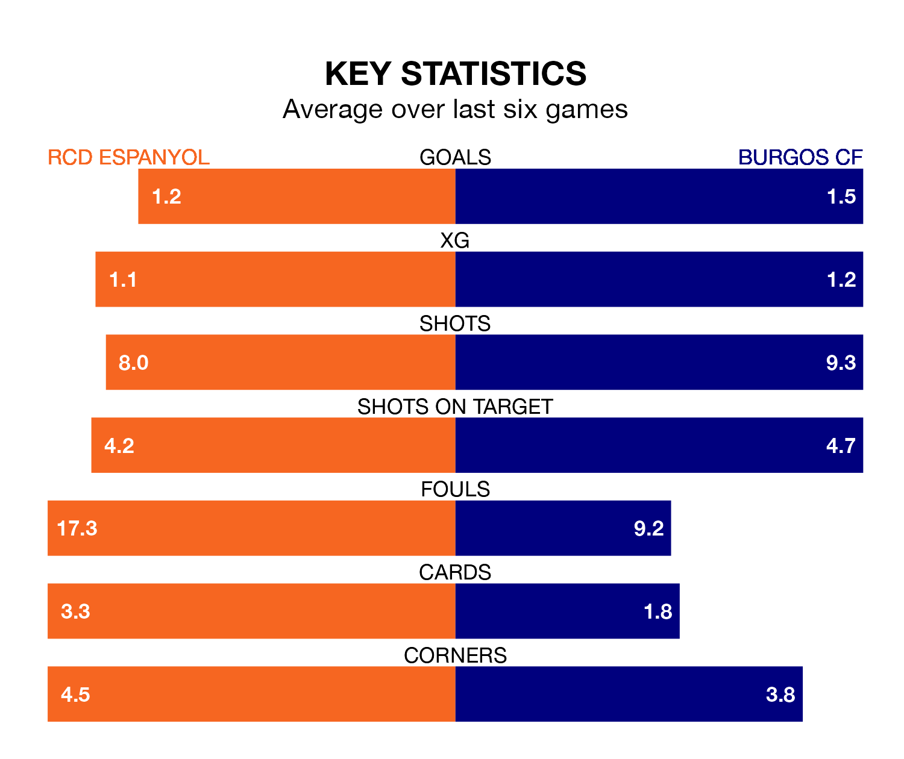

RCD Espanyol are heavy favourites to keep all three points at home in Tuesday's late kick-off against Burgos CF.
RCD Espanyol, who sit fifth in the Segunda División with 20 games played, are priced at 1.5 to seal victory at the RCDE Stadium.
Sitting six places and four points behind them in the table, Burgos are 5.6 to win with *Betting Company*, while the draw is at 3.6.
With 31 goals in 20 games so far this season, Espanyol are the league's third-highest scorers with 1.6 goals per game. And they are conceding fewer than average, letting in 21 goals at a rate of 1.0 per game.
Burgos are also above average scorers, with 1.3 goals per game, compared to a league average of 1.2. They have conceded 1.2 goals per game.
In Javi Puado, RCD Espanyol have one of the league's sharpest shooters so far this season. He has notched nine goals in 16 appearances, to sit second in the scoring charts.
His goal rate of one every 148 minutes is quicker than that of Curro Sánchez, Burgos CF's top scorer with a goal every 214 minutes, and a total of eight goals in 20 games.
The home team are in mixed form in the Segunda División, with two wins and three draws from their last six games.
With three wins and three draws over that period, the visitors' form is better – they have taken 12 points from 18, compared to Espanyol's nine.
Espanyol's last match was on Saturday, a 1-1 draw against FC Andorra.
Burgos beat FC Cartagena 3-0 last time out, also on Saturday, with Álex Bermejo Escribano (two) and José Joaquín Matos García on the scoresheet.
